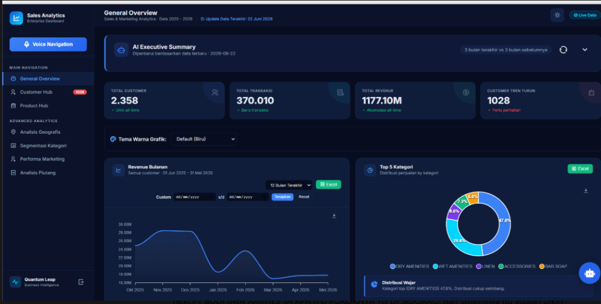

AI-Powered Sales & BI Platform
Sistem Analitik Penjualan & Asisten Bisnis Cerdas Terintegrasi AI

AI-Powered Sales & Business Intelligence Platform adalah sistem analitik dan monitoring bisnis berbasis web yang dikembangkan untuk membantu manajemen, supervisor, dan tim sales memantau performa penjualan secara real-time. Platform ini mengintegrasikan data penjualan, pelanggan, produk, wilayah, stok, piutang, dan aktivitas sales ke dalam satu dashboard terpusat yang mendukung pengambilan keputusan berbasis data.
Selain menyediakan visualisasi KPI dan laporan operasional, sistem juga dilengkapi dengan fitur AI Business Assistant yang mampu mengidentifikasi pola transaksi pelanggan, memberikan peringatan dini terhadap penurunan aktivitas pembelian, mendeteksi potensi kehilangan pelanggan (customer churn), serta menghasilkan insight bisnis secara otomatis untuk membantu tim sales melakukan tindak lanjut yang lebih tepat sasaran.
- Real-Time Sales Monitoring Dashboard: Pemantauan performa penjualan secara real-time melalui visualisasi KPI dan grafik interaktif.
- AI Executive Summary & Business Insights: Ringkasan eksekutif dan insight bisnis otomatis yang dihasilkan oleh asisten AI.
- Customer Behavior Analysis: Analisis mendalam pola transaksi dan perilaku pembelian pelanggan untuk mengidentifikasi tren.
- Sales Performance Monitoring: Analitik pencapaian target dan monitoring kinerja tim sales secara berkala.
- Product Performance Analytics: Evaluasi performa produk terlaris, kontribusi penjualan, dan perputaran barang.
- Geographic Sales Analysis: Visualisasi spasial dan pemetaan data penjualan berdasarkan wilayah penyebaran depo.
- Customer Segmentation: Segmentasi pelanggan secara dinamis berdasarkan nilai transaksi, frekuensi, dan resensi pembelian.
- Accounts Receivable Monitoring: Pengawasan piutang jatuh tempo dan pemantauan cashflow pembayaran dari pelanggan.
- Inventory & Stock Monitoring: Pemantauan stok persediaan barang di berbagai depo untuk meminimalkan kekosongan produk.
- AI-Based Customer Alert System: Sistem peringatan otomatis terhadap penurunan aktivitas pembelian pelanggan.
- Revenue & Target Achievement Tracking: Pelacakan pencapaian target penjualan bulanan dan tahunan secara real-time.
- Automated Business Recommendation Engine: Rekomendasi tindakan bisnis taktis otomatis untuk membantu tim sales.
- Voice Navigation Interface: Navigasi antarmuka dashboard menggunakan perintah suara (*voice control*) yang responsif.
- Automated KPI Reporting: Pembuatan laporan performa bisnis dan KPI secara otomatis dan terjadwal.
- Customer Churn Early Warning Detection: Deteksi dini potensi kehilangan pelanggan sebelum transaksi terhenti sepenuhnya.
- Purchase Pattern Analysis: Analisis pola dan kebiasaan pembelian produk oleh pelanggan untuk memahami kebutuhan mereka.
- Customer Reorder Prediction: Prediksi estimasi waktu pembelian kembali produk oleh pelanggan secara berkala.
- Sales Opportunity Identification: Identifikasi peluang penjualan tambahan (*upselling* & *cross-selling*) dari data transaksi.
- Product Recommendation Analysis: Analisis rekomendasi produk yang relevan untuk ditawarkan kepada pelanggan tertentu.
- Automated Business Insight Generation: Pembuatan insight bisnis taktis secara otomatis tanpa analisis manual.
- Customer Inactivity Detection: Pendeteksian otomatis pelanggan yang tidak melakukan aktivitas pembelian dalam periode tertentu.
- Anomaly Detection on Sales Activities: Deteksi kejanggalan atau ketidakwajaran pada aktivitas transaksi penjualan secara real-time.
- Pencegahan Kehilangan Pelanggan: Membantu tim sales mengidentifikasi pelanggan yang berpotensi tidak aktif sebelum kehilangan transaksi.
- Pengambilan Keputusan Lebih Cepat: Mempercepat pengambilan keputusan strategis melalui insight dan peringatan otomatis berbasis data.
- Visibilitas Bisnis Terintegrasi: Meningkatkan visibilitas performa penjualan, produk, wilayah, dan pelanggan dalam satu platform terpusat.
- Pengurangan Proses Manual: Mengurangi kebutuhan analisis manual yang memakan waktu dengan dashboard real-time dan AI-generated insights.